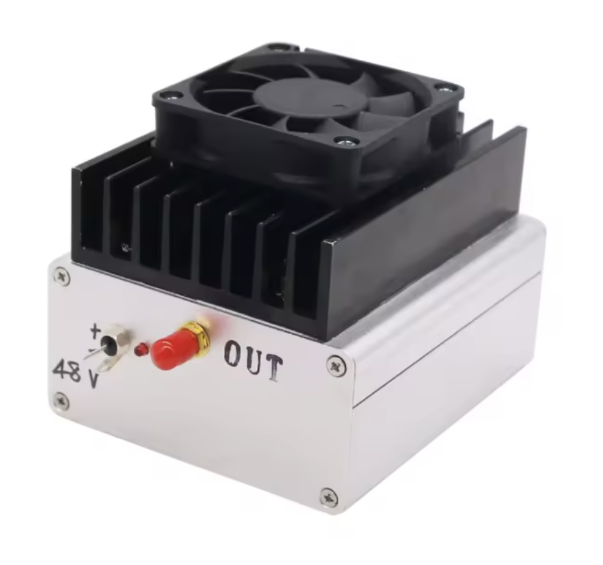
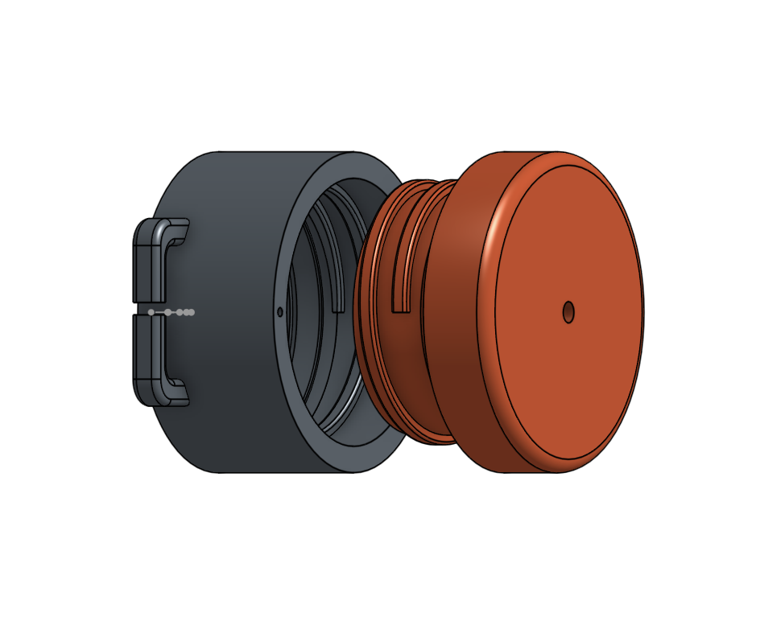
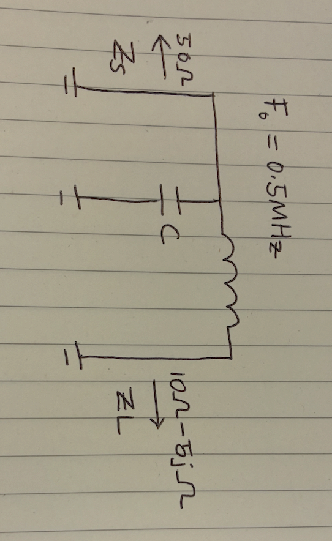
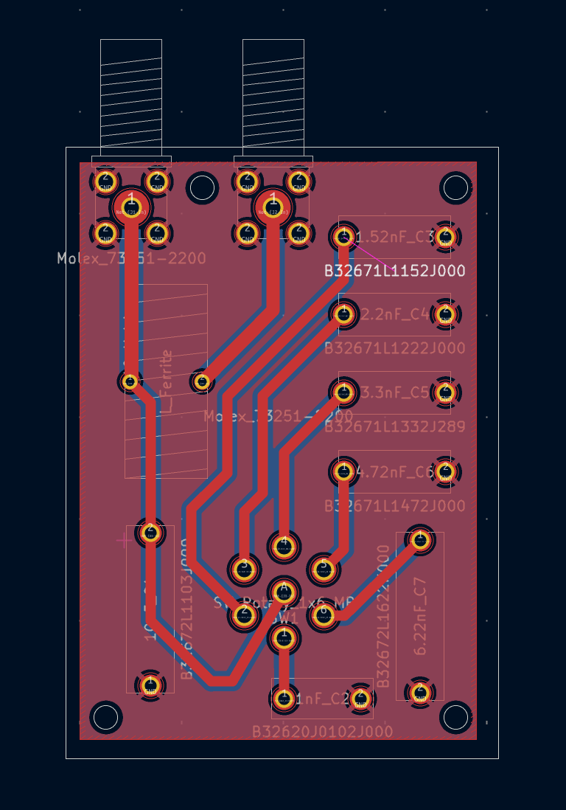
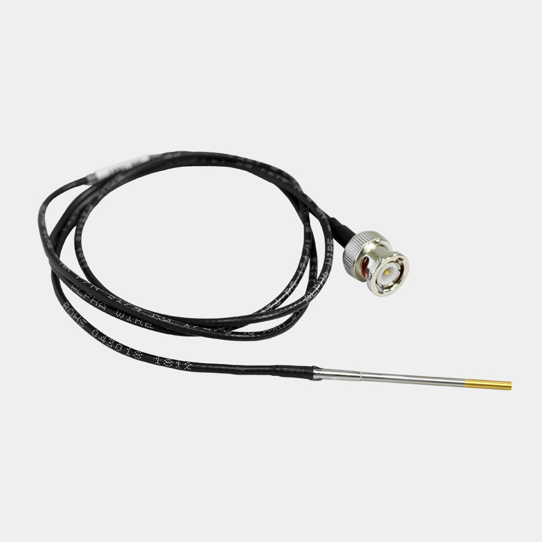
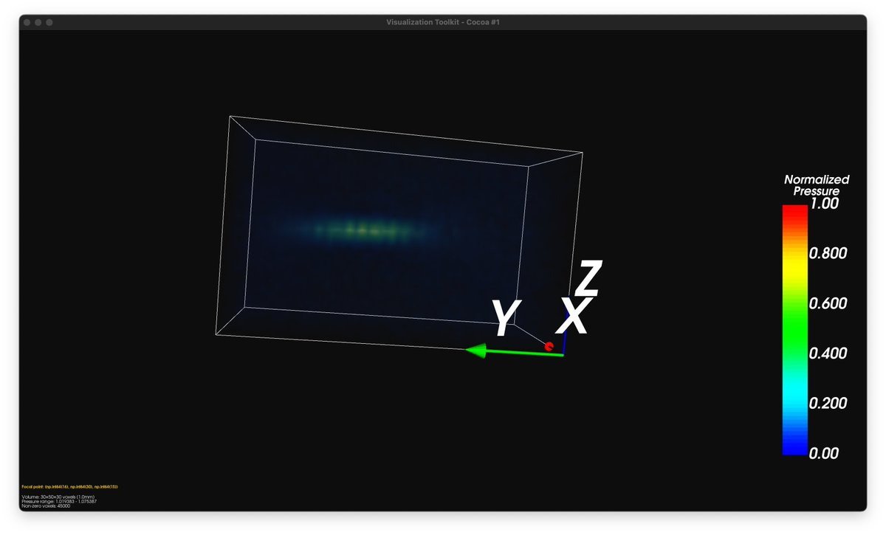

The project was motivated by recent results that transcranial magnetic stimulation of the medial prefrontal cortex (mPFC), a key node in the default mode network, reduces sleep onset latency.
The goal was to self-experiment using a focused ultrasound transducer to answer whether ultrasound stimulation can also reduce sleep onset latency. Although I did not end up self-experimenting, I'm hoping this document helps people who want to do ultrasound neurostimulation.
Western manufacturers sell prefabricated transducers that meet the requirements below, but they are produced in very low volume and are thus priced at $15K and above. So naturally I set out to make my own.
Four key components of a transducer:
Peripheral equipment:
Below is an overview of sourcing the piezo element & amplifier, and making the transducer case and the impedance matching network. Crucially, I detailed the process of characterizing the generated pressure field of the transducer to tune the amplifier gain to attain the required pressure.
I sourced this piezo from Alibaba. It is a PZT-4 ceramic with mechanical Q (Qm) of 600 and thickness of 4.1 mm, with a fundamental frequency of 500 kHz and diameter of 50 mm. The element is bowl-shaped (spherically focused) with a 30 mm focal length. Its maximum tolerable voltage is 400V, far higher than my requirements. The intended application of the element is in ultrasonic cleaning.

Figure 1: 500KHz piezoelectric element (50mm diameter)
Sourcing a low-frequency (500KHz), yet high-power radio amplifier is difficult. Widely produced amplifiers were either low-frequency and low-power, or high-power and high-frequency. Thankfully, I found this amplifier on Alibaba, so I bought this Class-B push-pull amplifier rated at 50W over 100KHz - 3MHz.
Figure 2: 50W push-pull RF amplifier (100KHz - 3MHz)
The critical constraint of the transducer casing is that it must be waterproof, air-backed, and must tightly secure the piezoelectric device to minimize vibrations misaligned with the intended path of the acoustic beam. Air backing provides maximum acoustic impedance mismatch at the rear surface (~99.9% reflection), directing nearly all acoustic energy forward; this maximizes output pressure at the cost of increased ring-down time and reduced bandwidth: an acceptable tradeoff for my application which uses a fixed 500KHz. The enclosure must be waterproof because the piezo element has electrodes of opposite polarity on the front and back silver-painted surfaces, which must remain electrically isolated to convert electrical energy to mechanical energy.
I designed the cylinder with tight tolerances and used press-fitting combined with UV-cure epoxy adhesive bonding to secure the piezo element on the front face of the transducer. The back features a screw-on cap with an O-ring seal (inspired by water bottle seals). A small hole is left in the back side cap to let in a wire to connect the back electrode, which is later sealed with epoxy to complete the waterproof enclosure. No matching layer is used, and an acoustic coupling to the skin is achieved via standard ultrasonic gel.
The reactance of the completed assembled transducer at 500Khz was tested with a network analyzer to confirm secondary vibrations were not significant.
Figure 3: Exploded view showing assembly
A key component of the transducer is the impedance matching network. Given there is already 75% power loss through the skull, and the scarcity of high low-frequency, high-power (50W+) amplifiers, efficient power transfer from amplifier to transducer is essential.

Figure 4: Measuring load impedance with pocketVNA. The crater of the piezoelectric element is filled with gel and clamped against my forehead to simulate load under real conditions.
I made three impedance measurements of the load with a vector network analyzer, and the averaged results showed (10.8 − j5.3) Ω. Since my amplifier has an output impedance of 50Ω, power transfer efficiency without a matching network is only 58%.
Figure 5: L-matching network schematic (F0 = 0.5 MHz, Zs = 50 Ω, ZL = (10 − j5) Ω)
I chose an L-matching network design for its simplicity. Solving for C and L, C = 12.13 nF and L = 8.23 μH. Given how load impedance can vary under real conditions, I placed a fixed 10 nF capacitor to ground and added a rotary switch to select from 6 additional shunt capacitors: 1 nF, 1.52 nF, 2.2 nF, 3.3 nF, 4.72 nF, and 6.22 nF. This allows fine-tuning the total shunt capacitance from 11 nF to 16.22 nF to compensate for impedance variations. The match was verified by measuring S11 on the VNA, confirming return loss of −10 dB at 500 kHz (~90% power transfer).
Figure 6: Final manufactured PCB for impedance matching network

Figure 7: Full system (oscilloscope + amplifier + L-network + transducer) testing in a water bath

Figure 8: Fully assembled transducer
For safety and efficacy testing, a hydrophone must be used to measure the real pressure field generated by the transducer. Unfortunately, a professional measurement tank with a 3-axis stage to make volumetric measurements costs around $80K, sold by Onda Corporation.
The Onda HNR-0500 hydrophone with a piezo element of 0.5mm in diameter at the tip. The hydrophone was purchased off ebay for $800 and calibrated by Onda for $1.45k.
Figure 9: Onda HNR-0500 hydrophone
I opted to modify an Ender 3 printer to create my own measurement tank. The basic idea is to use the 3D printer as a 3-axis positioning stage, attach the hydrophone perpendicular to the print head, and write a program that sends G-code instructions to the printer while triggering the oscilloscope to capture pressure waveforms at each grid point. Water in the tank was degassed in a vacuum chamber for 30 minutes prior to measurement to eliminate bubble-induced scattering artifacts. Equipment list and code available here.
Using this setup, I measured a 5 cm × 5 cm × 5 cm volume at 1 mm voxel resolution. The Ender 3 has a positioning repeatability of ~100–200 μm, well within the 1 mm grid spacing and sufficient for characterizing safety parameters of the ~1.5 mm focal spot at 500 kHz. From the measured pressure field, I verified the 30 mm focal length specified by the manufacturer and computed the amplifier gain required to achieve the target mechanical index and peak negative pressure.

Figure 10: Complete characterization setup with modified Ender 3D printer as 3-axis positioning stage
Figure 11: Measured pressure field at 1 mm voxel resolution, showing focal spot at 30 mm depth
You could make a budget ultrasound transducer for cheap (<$300), but you won't be able to do neurostimulation without paying additional hidden costs.
The first two hidden costs arise from the need to measure the transducer's pressure field. Hydrophone calibration service and the hydrophone dominates cost (in that order). With luck, you could source a used hydrophone for <$1k on Ebay that comes calibrated.
Possibly, you could measure pressure fields using just camera + software, bypassing hydrophone/calibration/measurement tank entirely. This would lower the entry cost of ultrasound neurostimulation significantly. Someone should consider making one!
The final hidden cost is brain imaging cost. To do neurostimulation, you need to do "neuronavigation": positioning the transducer on the head to stimulate the target region. The best option for neuronavigation is to simultaneously stimulate and measure neural activity with fMRI. This requires a MRI machine.
A worse option for neuronavigation is to treat simulation results as ground-truth. You would still need a high-resolution brain scan using MRI or CT. The latter is not recommended, it can literally cause brain cancer.
So the transducer is cheap, but neuronavigation is not. Unfortunately, there is no such thing as "budget ultrasound neurostimulation".
Last updated: 2025-12-08